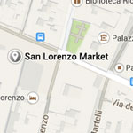
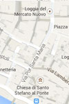
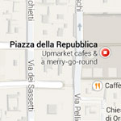
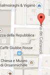

|
| Home The City Local Facts Travel Blogs Photo Gallery |
|
ShoppingWindow-shopping in Florence is like visiting an enormous contemporary-art gallery. Many of today's greatest Italian artists are fashion designers, and most keep shops in Florence. Discerning shoppers may find bargains in the street markets. Do not buy any knockoff goods from any of the hawkers plying their fake Prada (or any other high-end designer) on the streets. It's illegal, and fines are astronomical if the police happen to catch you. (You pay the fine, not the vendor.) Shops are generally open 9 to 1 and 3:30 to 7:30, and are closed Sunday and Monday mornings most of the year. Summer (June to September) hours are usually 9 to 1 and 4 to 8, and some shops close Saturday afternoon instead of Monday morning. When looking for addresses, you'll see two color-coded numbering systems on each street. The red numbers are commercial addresses and are indicated, for example, as 31/r. The blue or black numbers are residential addresses. Most shops take major credit cards and ship purchases, but because of possible delays it's wise to take your purchases with you. The usual fashion suspects—Prada, Gucci, Versace, to name but a few—all have shops in Florence. But if you want to buy Florentine in Florence, stick to Gucci, Pucci, Ferragamo, and Roberto Cavalli—they’re either all native sons or adopted native sons (Salvatore Ferragamo). The intrepid shopper might want to check out some other, lesser-known shops. For bargains on Italian designer clothing, you need to leave the city. A list of places to shop at:Open Markets
Popular Streets and Squares
    |